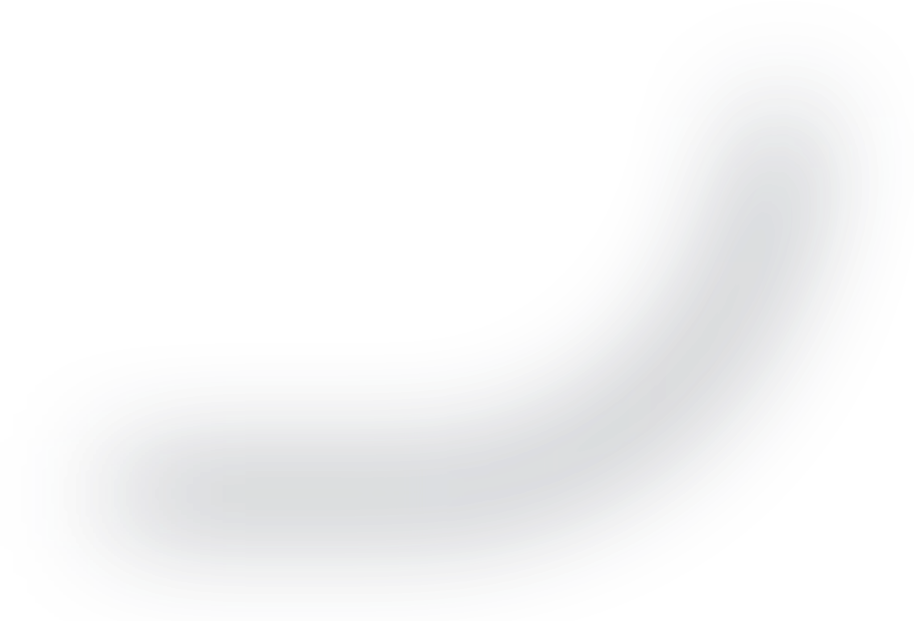
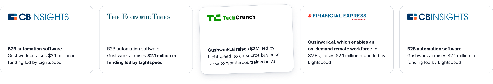
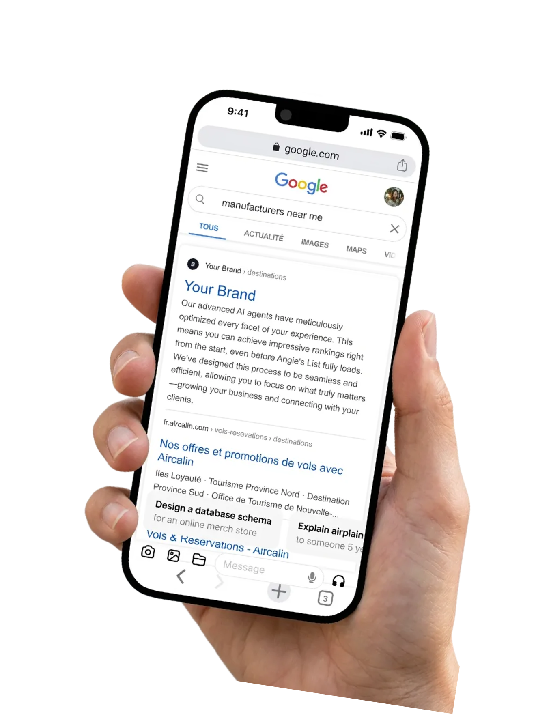
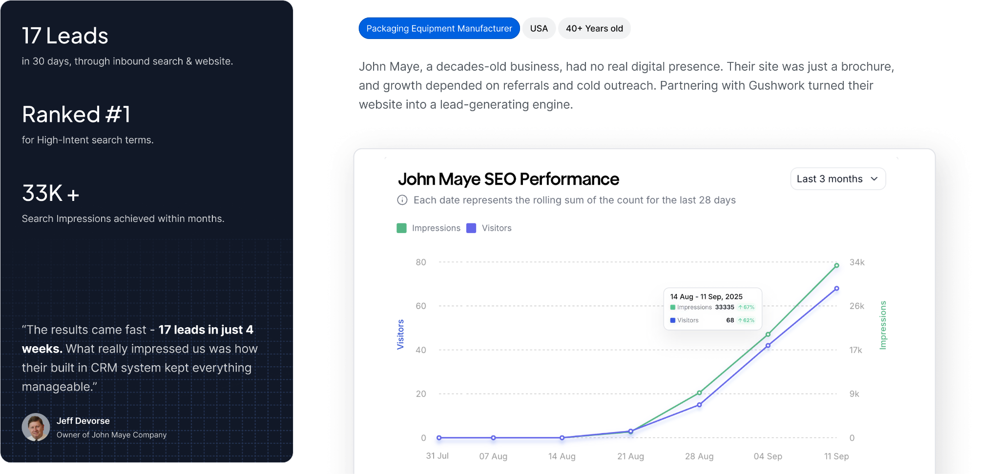
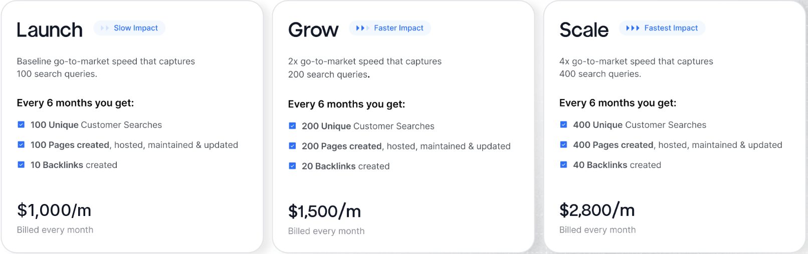

Roadmap to generate 10 qualified leads monthly for machine tool builders
You'll be in good hands
Most small and medium business websites stay invisible to Google and AI. We make them discoverable.

Our approach: intent-led AI SEO

We turn your website into a lead magnet with an automated AI SEO engine, so you show up where buyers search and convert visitors into revenue.
Find the demand
Identify 1,000+ real search queries your buyers are asking.
Outsmart the competition
Scrape top results, then publish stronger, data-backed pages.
Publish at scale
Launch 100+ targeted pages yearly.
AI feed
An AI-optimised feed that boosts Google rankings and AI mentions.
Low touch from your end,
highly managed from ours
Beginning
Onboarding call
With your customer growth strategist, senior growth strategist and account executive.
Ongoing updates
Strategic progress updates
Delivered to you.
Monthly
Monthly catch up
With your customer growth strategist.
Quarterly
Quarterly business review
With our head of client success and your customer growth strategist.
John Maye Company: a case study

Simple pricing that ramps with ROI
Choose your speed to qualified leads
Save $2,400 a year with an annual subscription or upfront payment.

650+ businesses worldwide trust us to generate high-intent leads
1.3M
search impressions in 12 months, from a site that ranked for nothing
Don't just take our word for it
We went from invisible to page one in four months, and the leads that come through now already know what we do.
Before and after
Before
Ranked for nothing
No organic pipeline. Every lead bought.
After
100+ pages ranking
Qualified inbound, arriving without spend.